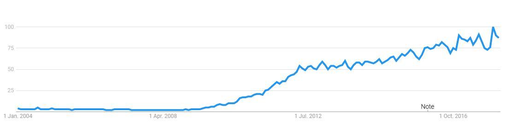

By Ruofan Chen
See also Significant K-pop Groups
Many of you have probably heard of the word hallyu or K-pop, but do you know what they mean? Why are some people so obsessed with it? What are some major parts of it? Let me give you a brief introduction this topic that recently gained more attention.
First of all, let's define the term "hallyu". The term hallyu is the romanization for the "Korean Wave", which refers to the global increase in South Korean culture since the 1990s. This includes the Korean dramas, tv shows, music, and many more. An important factor that helped this wave is the development of the internet and also the increase in connections between people despite distance. This also affected the economy of South Korea as this wave attracts many tourists to the country.
Although hallyu has many other components, K-pop and K-dramas certainly are a larger portion to this whole idea as they are one of the first components of hallyu. K-pop is short form of Korean popular music, which mainly refers to modern music genres that are also used around the world. K-dramas are Korean television dramas very similar to Western television dramas, and this industry is closely connected with the K-pop industry as it introduces us to OSTs(Original Sound Tracks). OSTs are a large part of the K-pop industry, as a popular drama can easily attract listeners of its OSTs and popular OSTs can also make people remember the K-drama.
K-pop's global ackowledgement started since the 1990s. The modern "Idol" K-pop culture began with the boy band "H.O.T." in 1996, and this culture continues to be the mainstream of K-pop today. There are many different "peaks" of K-pop as new artists and groups debut and the difference between the different popularities of the music. Here is a graph of the search volume of K-pop on Google since 2004. Data provided and graph created by Google©.
Not everybody can become a famous celebrity in the K-pop industry. In South Korea, children and teenagers are "scouted" by companies through public auditions, scouting and scouting at special events such as singing and dancing competitions. Some scouting stories are very fascinating, as scouting locations are range in countries and scenarios. If you are visiting South Korea and there is a stranger who is approching you, you might be scouted for the company.
After being scouted by a company, people become trainees and the company begins to train you to be ready for debut. This process can be as short as 2 months or can be longer than 10 years depending on the company's plan to debut artists and the skill of the trainee. Since this process can range in time, many people who are not as determined drop out of the company and quit. Many companies will also measure the weight of the trainees as the K-pop industry has very harsh standards upon the body image of the artists. The companies will need the trainees to reach this goal of losing or gaining weight(usually losing) weight to make them have an "ideal body". This standard is an underweight and unhealthy for the trainees, however this is the current body image standards of a "beautiful" body and the company need to profit from the artists.
Competition is a large part in the trainees. The company will have assessments upon the different criterias of an idol regularly (e.g. body image, singing, dancing, rapping, acting, knowing foreign languages such as Korean, English, Mandarin, and Japanese), and the trainees who are more advanced might be chosen for the "debut team", where the company has plans for a new group or artist in the near future and are planning to make this team debut. The members of the debut team may be eliminated from the team depending on the plans of the company. Usually the company decides on the concepts, songs, and the general image of the group and artists. People that doesn't fit their "plan" might be kicked out of the team. The standards of the assessments will also be more strict and more like an idol.
There are many idols who had debuted under training of a similar idol system, however there are different outcomes in different cases. For example, trainees sometimes are put in groups that are only male/female/unisex, or sometimes the trainees may debut as a solo artist or as a duo. They may also debut as an idol group or as an idol band. These depends once again upon the companies' plans and also talents of the individual artists.
Even though different companies have different plans for their artists, the companies try in different ways to promote their artists. A common way would be participating in music shows that gives the artists a place to perform their songs (e.g. The Show, Show Champion, M Countdown, Music Bank, Show! Music Core, Inkigayo). These programs are brodcasted at great time slots at the major channels in South Korea, which can promote the song/comeback very well. Variety shows are also a popular go-to for companies as they target a larger range of audience (e.g. Weekly Idol, Happy Together, Running Man). These shows can display the idol's sense of humour and can promote the artist to a larger range of audiences.
[Advertisement]. (2018, February 23). Retrieved February 23, 2018, from https://trends.google.com/trends/explore?date=all&q=Kpop
[A BTS photo shoot]. (2017, December 19). Retrieved February 24, 2018, from https://www.rollingstone.com/music/features/ inside-bts-mania-a-day-in-the-life-of-the-k-pop-superstars-w514229
[A DAY6 photo shoot]. (2015, May 5). Retrieved February 24, 2018, from https://kpopinfo114.wordpress.com/male_artist_profiles/d/ day6-profile/
[A F(x) photo shoot.]. (2016, April 28). Retrieved February 24, 2018, from http://kprofiles.com/fx-members-profile-updated/
[A SNSD photoshoot]. (2016, December 5). Retrieved February 24, 2018, from https://www.allkpop.com/forum/threads/ snsd-has-garnered-a-new-record-2-billion-views-on-mvs-no-1-k-pop-girl-group-on-yt.40833/
[A Red Velvet photoshoot]. (3017, July 31). Retrieved February 24, 2018, from https://www.soompi.com/2017/07/31/ quiz-can-identify-red-velvet-mv-single-screenshot/
[A Twice photoshoot]. (2017, March 21). Retrieved February 24, 2018, from https://www.soompi.com/2017/03/21/ twice-announces-plans-debut-showcase-japan/
[An screen-shot of Blackpink's m/v "As If It's Your Last"]. (2017, September 13). Retrieved February 24, 2018, from http://en.koreaportal.com/articles/41064/20170913/black-pink-update-new-as-if-it-s-your-last-achievements-and-japanese-debut.htm
[Hallyu]. (2016, February 8). Retrieved February 24, 2018, from https://www.theodysseyonline.com/hallyu-101
[Magazine BIGBANG shoot]. (2017, September 11). Retrieved February 24, 2018, from https://www.allkpop.com/article/2017/09/ big-bang-hits-8-million-subscribers-on-youtube
[Shinee 1 of 1 photoshoot]. (2018, February 17). Retrieved February 24, 2018, from https://www.soompi.com/2018/02/17/ shinee-keeps-jonghyun-close-hearts-return-stage-japanese-concert/
[Trainees training in a dance studio]. (2017, January 27). Retrieved February 24, 2018, from http://www.rojakdaily.com/entertainment/ article/1728/the-extremes-that-koreans-take-to-become-a-kpop-idol
EXO [Digital image]. (n.d.). Retrieved February 24, 2018, from https://open.spotify.com/artist/3cjEqqelV9zb4BYE3qDQ4O
HTML5 Logo [Digital image]. (2018, February 11). Retrieved February 24, 2018, from https:// en.wikipedia.org/wiki/HTML5
K-pop. (2018, February 25). Retrieved February 25, 2018, from https://en.wikipedia.org/wiki/K-pop
List of K-pop artists. (2018, February 24). Retrieved February 25, 2018, from https://en.wikipedia.org/wiki/List_of_K-pop_artists
YG Entertainment. (2015, October 3). [Some YG young girls training in a dance studio.]. Retrieved February 24, 2018, from https:// aminoapps.com/c/k-pop/page/blog/kpop-trainee-hardships/wZIo_upxkPpBblZlv5b3W3ZzRXrMBq
Return to top.